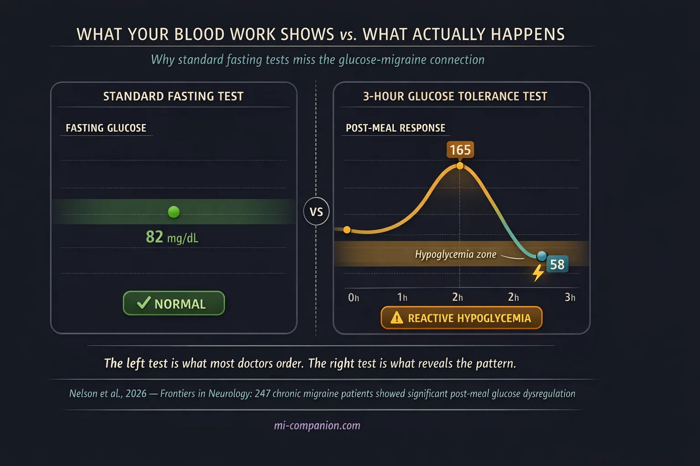

By Rustam Iuldashov
30 years lived experience with chronic migraine | Sources: 26 peer-reviewed references including Frontiers in Neurology (n=247), The Journal of Pain (scoping review), Frontiers in Nutrition (meta-analysis), Annals of Neurology, BMC Neurology | Last updated: March 2026
Medical Review: This content is based on peer-reviewed research from Frontiers in Neurology, The Journal of Pain, Annals of Neurology, BMC Neurology, Frontiers in Nutrition, European Journal of Neurology, Brain and Behavior, and The Journal of Headache and Pain.
Important Notice: This article is for informational purposes only and does not replace professional medical advice. The author is not a licensed physician or healthcare professional. Always consult your doctor before making changes to your diet or treatment plan.
Key Takeaways
- Your brain consumes ~20% of your body’s glucose despite being only 2% of body weight — making it acutely sensitive to blood sugar swings[1]
- Glucose instability (spikes and crashes) may matter more than low blood sugar alone as a migraine trigger[7]
- Standard fasting blood tests can miss post-meal glucose dysregulation — an extended glucose tolerance test or continuous glucose monitor provides a clearer picture[7, 8]
- Insulin resistance is linked to more severe, more frequent attacks and may drive the progression from episodic to chronic migraine[9, 10, 11]
- Low-glycemic index diets performed as well as standard preventive medications in a 350-patient randomized trial[12]
- Practical first steps: eat regular meals, pair carbs with protein and fat, avoid sugar on an empty stomach, and keep a snack in your bag
Two o’clock. No lunch. A dull pressure tightens behind your eyes. You grab a candy bar — quick fix. Forty-five minutes later, the pressure hasn’t faded. It’s worse. By three, you’re in a full attack.
This isn’t bad luck. It’s biology. Your brain is the most glucose-hungry organ you own, burning roughly 20% of all the energy your body produces — packed into just 2% of your body weight.[1] For people with migraine, that ravenous appetite for fuel comes with a cost. When blood sugar swings, the migraine brain swings harder.
The Most Expensive Organ in Your Body
Think of glucose as your brain’s electricity. Steady supply, lights stay on. But a spike followed by a crash? That’s a power surge followed by a brownout — and in migraine, that analogy is disturbingly literal.
A phenomenon called cortical spreading depression (CSD) underlies migraine aura — those eerie visual disturbances that can precede an attack. CSD is a slow wave of electrical shutdown that rolls across the brain’s surface, and it is extraordinarily expensive to run. It depletes glucose and slashes ATP (your cells’ energy currency) by roughly 50%.[2] Here’s the critical part: animal studies demonstrate that low blood sugar lowers the threshold for CSD, making these waves easier to trigger and longer to resolve.[3] When your brain’s fuel tank runs low, the very electrical cascade that launches a migraine becomes easier to set off.
A rare genetic condition offers a natural experiment that makes this point even clearer. People with GLUT1 deficiency — a mutation affecting the protein that ferries glucose across the blood-brain barrier — commonly present with hemiplegic migraine, one of the most severe subtypes.[4, 5] Restrict glucose delivery to the brain, and migraine is among the first things that happen.
The brain’s energy cost: Your brain weighs about 1.4 kg but consumes ~20% of your body’s total glucose supply.[1] Cortical spreading depression — the wave underlying migraine aura — depletes ATP by roughly 50%, and low blood sugar lowers the threshold for triggering it.[2, 3]
Not Just Low — Unstable
For decades, the focus was simple: low blood sugar triggers migraine. Fasting remains one of the most commonly reported triggers in the research literature, consistently implicated across studies spanning multiple countries and populations.[6]
But the picture has sharpened. A landmark 2026 study published in Frontiers in Neurology changed the conversation. Researchers examined 247 people with chronic migraine using oral glucose tolerance tests and fitted 131 with continuous glucose monitors.[7] What they found wasn’t just low blood sugar. Chronic migraine subjects had significantly greater glucose variability — sharper spikes after meals and deeper crashes afterward compared to healthy controls. The researchers identified three distinct metabolic profiles among participants, suggesting that different people with migraine may have fundamentally different patterns of glucose dysfunction.[7]
This reframes the problem. It’s not simply about avoiding low blood sugar. It’s about avoiding the rollercoaster. The rapid ups and downs appear to destabilize an already hyperexcitable brain — and the 2026 data suggest that this instability is measurable, consistent, and potentially treatable.[7]
It’s not about avoiding low blood sugar — it’s about avoiding the rollercoaster.
The Hidden Crash After Meals
One pattern stands out as particularly dangerous: reactive hypoglycemia. You eat something sugary or carb-heavy. Blood sugar rockets up. Your body overproduces insulin to compensate. Blood sugar plummets below where it started. The crash arrives two to four hours later — right when you thought the meal was behind you.[8]
A 2024 case series described three young men with chronic migraine who all showed this exact pattern on extended glucose tolerance tests — despite completely normal fasting blood sugar and HbA1c.[8] Standard lab work missed it. Only the three-hour test revealed the dysfunction. When all three adopted a ketogenic diet, their migraine frequency dropped from 15+ days per month to fewer than four. Within three months.[8]
This is a point worth underlining. Normal blood work does not rule out glucose problems. The dysregulation hides in the post-meal window — a timeframe most routine tests never examine.
Normal blood work does not rule out glucose problems. The dysregulation hides in the post-meal window.

Insulin Resistance: The Deeper Current
Beneath the spikes and crashes runs another current. Insulin resistance — the condition where cells become progressively less responsive to insulin’s signals — is emerging as a significant factor in migraine severity.
A case-control study found insulin resistance more common in migraine patients than healthy controls, and those with insulin resistance experienced more severe, higher-impact attacks.[9] Research in women with chronic migraine revealed a significant prevalence of insulin resistance compared to both episodic migraine and healthy controls — with a three-fold higher probability of insulin resistance in chronic versus episodic cases.[10]
A comprehensive 2022 scoping review in The Journal of Pain wove these threads into a provocative hypothesis. The “neuroenergetic” model proposes that brain insulin resistance creates a chronic mismatch between the brain’s energy reserves and its metabolic demands.[11] Over time, this deficit may drive migraine chronification — the progression from occasional attacks to chronic, relentless headache.[11] If this hypothesis holds, insulin resistance isn’t just a companion to migraine. It may be a metabolic bridge between having occasional attacks and living with them daily.
The neuroenergetic hypothesis: Brain insulin resistance may create a chronic mismatch between the brain’s energy reserves and metabolic demands — potentially driving the progression from episodic to chronic migraine.[11] Insulin resistance correlated with more severe and higher-impact migraine attacks in case-control studies.[9, 10]
⚠️ When to See a Doctor
If you experience sudden, severe headache with confusion, vision loss, difficulty speaking, or weakness on one side of the body, call emergency services immediately — these could indicate a stroke, not a migraine.
You should also consult a healthcare professional if your headaches have changed in frequency or character, if you experience recurrent symptoms of hypoglycemia (shakiness, confusion, sweating between meals), or if you suspect you may have insulin resistance or metabolic concerns. A doctor can order an extended oral glucose tolerance test or recommend continuous glucose monitoring to evaluate patterns that standard blood work may miss.
Smoothing the Curve: What Actually Works
The most powerful implication of this research is practical: glucose stability may be a modifiable factor in migraine prevention. You don’t need a prescription to start.
Low-glycemic index diets focus on foods that release glucose slowly — whole grains, legumes, vegetables — while minimizing sugar and refined carbs. A randomized controlled trial of 350 migraine patients found this approach as effective as standard preventive medications (propranolol, amitriptyline, flunarizine, topiramate) in reducing attack frequency and severity over three months.[12] A personalized low-glycemic program using continuous glucose monitors showed significant reductions in migraine days, pain severity, and medication use.[13]
Ketogenic diets take stabilization further, shifting the brain’s primary fuel from glucose to ketone bodies — a steadier, less volatile energy source. A 2023 systematic review and meta-analysis found ketogenic interventions significantly reduced migraine frequency, with 58–83% of patients achieving at least a 50% reduction in attacks.[14] One study observed monthly headache days dropping from 12.5 to 6.7 after three months on a ketogenic protocol.[15]
Everyday strategies require neither extreme diets nor specialist supervision. Don’t skip meals — especially breakfast. Avoid sugar on an empty stomach. Pair carbohydrates with protein and healthy fats to slow absorption. Keep a portable snack (nuts, cheese, a boiled egg) in your bag for the inevitable meeting that runs long. These aren’t dramatic interventions. They’re small adjustments that smooth the curve your brain rides all day.
Low-Glycemic Index Diet
Focus on whole grains, legumes, vegetables. Minimize sugar and refined carbs. A 350-patient RCT found this approach as effective as standard preventive medications over 3 months.[12]
Ketogenic Diet
Shifts brain fuel from glucose to ketone bodies. Meta-analysis: 58–83% of patients achieved ≥50% reduction in attacks.[14] Requires medical supervision.
Everyday Glucose Stability
Don’t skip meals. Pair carbs with protein and fat. Avoid sugar on an empty stomach. Keep portable snacks available. Small adjustments, consistent results.
A Bigger Metabolic Picture
The glucose-migraine connection is one thread in something larger. Scientists are beginning to see migraine not just as a pain disorder but as a metabolic one — a brain that struggles to match energy supply to demand.
This shift is already shaping drug development. In February 2026, researchers reported positive results for a new class of migraine preventive that targets PACAP — a signaling molecule involved in both pain pathways and the same autonomic circuits that help regulate blood sugar.[16, 25] The drug, bocunebart, reduced monthly migraine days in over 430 patients who hadn’t responded to existing treatments.[16] It works through a completely different mechanism than current CGRP-based therapies — opening a second front in migraine prevention for people who need it most.
These converging lines of research point toward a future where your blood sugar profile may guide your prevention strategy as much as your headache diary.
We’re not there yet. But we’re closer than we’ve ever been.
Scientists are beginning to see migraine not just as a pain disorder but as a metabolic one.
⚕️ Important Medical Disclaimer
This article is for informational and educational purposes only and does not constitute medical advice, diagnosis, or treatment. The author, Rustam Iuldashov, is not a licensed physician, neurologist, or healthcare professional. He is a patient advocate with 30 years of personal experience living with chronic migraine.
All clinical claims in this article are sourced from peer-reviewed research published in indexed medical journals. Study designs and sample sizes are noted where applicable.
Always consult a qualified healthcare provider for questions about your individual health, migraine treatment, or dietary changes.
Blood sugar management can interact with diabetes medications, insulin therapy, and other treatments. Never modify your diet or medication regimen without consulting your doctor. If you are pregnant, breastfeeding, have diabetes, or take blood sugar–lowering medications, dietary changes such as ketogenic diets require medical supervision. Always discuss glucose testing, dietary interventions, and any concerns about insulin resistance with your healthcare provider before making changes. This content was last reviewed for accuracy in March 2026.
References
- Dienel GA. “Brain glucose metabolism: Integration of energetics with function.” Physiological Reviews, 99:949–1045 (2019). doi:10.1152/physrev.00062.2017. Study design: Comprehensive review.
- Mies G, Paschen W. “Regional changes of blood flow, glucose, and ATP content determined on brain sections during a single passage of spreading depression in rat brain cortex.” Experimental Neurology, 84:249–258 (1984). doi:10.1016/0014-4886(84)90222-X. Study design: Animal experimental.
- Kilic K, Karatas H, Dönmez-Demir B, et al. “Inadequate brain glycogen or sleep increases spreading depression susceptibility.” Annals of Neurology, 83:61–73 (2018). doi:10.1002/ana.25122. Study design: Animal experimental.
- Mohammad S, Coman D, Calvert S. “Glucose transporter 1 deficiency syndrome and hemiplegic migraines as a dominant presenting clinical feature.” Journal of Paediatrics and Child Health, 50:1025–1026 (2014). doi:10.1111/jpc.12613. Study design: Case report. n=1.
- Almuqbil M, Rivkin MJ, Takeoka M, et al. “Transient regional cerebral hypoperfusion during a paroxysmal hemiplegic event in GLUT1 deficiency syndrome.” European Journal of Paediatric Neurology, 22:544–547 (2018). doi:10.1016/j.ejpn.2018.01.019. Study design: Case report. n=1.
- Woldeyohannes AT, Kassa GM, Lemu YK, et al. “Irregular meal and migraine headache: a scoping review.” BMC Neurology, 25:114 (2025). doi:10.1186/s12883-025-04124-1. Study design: Scoping review. n=37 studies.
- Nelson CA, Reavely KW, Jennings MR, et al. “Glucose dysregulation and glycemic phenotyping in chronic migraine.” Frontiers in Neurology, 16:1719724 (2026). doi:10.3389/fneur.2025.1719724. Study design: Retrospective cohort. n=247 (GTT), n=131 (CGM).
- Bills KB, Small CA, Reavely KW, et al. “Chronic migraine may be associated with postprandial hypoglycemia in adult men: A case series.” Cureus, 16(3):e55670 (2024). doi:10.7759/cureus.55670. Study design: Case series. n=3.
- El-Motayam AS, El-Sawy NM, Shalaby NM, et al. “The potential impact of insulin resistance and metabolic syndrome on migraine headache characteristics.” BMC Neurology, 22:440 (2022). doi:10.1186/s12883-022-02966-x. Study design: Case-control. n=60.
- Fava A, Pirritano D, Consoli D, et al. “Chronic migraine in women is associated with insulin resistance: a cross-sectional study.” European Journal of Neurology, 21:267–272 (2014). doi:10.1111/ene.12289. Study design: Cross-sectional. n=249.
- Del Moro L, Rota E, Pirovano E, Rainero I. “Migraine, Brain Glucose Metabolism and the ‘Neuroenergetic’ Hypothesis: A Scoping Review.” The Journal of Pain, 23(8):1294–1317 (2022). doi:10.1016/j.jpain.2022.02.006. Study design: Scoping review. n=209 sources.
- Evcili G, Utku U, Ogun MN, Ozdemir G. “Early and long period follow-up results of low glycemic index diet for migraine prophylaxis.” Agri, 30(1):8–11 (2018). doi:10.5505/agri.2017.62443. Study design: RCT. n=350.
- Lelleck VV, Schulz F, Witt O, et al. “A Digital Health Application Allowing a Personalized Low-Glycemic Nutrition for the Prophylaxis of Migraine: Proof-of-Concept Data from a Retrospective Cohort Study.” Nutrients, 14(4):862 (2022). doi:10.3390/nu14040862. Study design: Retrospective cohort. n=84.
- Neri LC, Ferraris C, Catalano G, et al. “Ketosis and migraine: a systematic review of the literature and meta-analysis.” Frontiers in Nutrition, 10:1204700 (2023). doi:10.3389/fnut.2023.1204700. Study design: Systematic review / Meta-analysis. n=10 studies.
- Caprio M, Moschetta F, Filippi F, et al. “Migraine Prevention through Ketogenic Diet: More than Body Mass Composition Changes.” Nutrients, 14(17):3557 (2022). doi:10.3390/nu14173557. Study design: Retrospective observational. n=23.
- Lundbeck A/S. “Lundbeck announces positive phase IIb top-line results with bocunebart (Lu AG09222; anti-PACAP mAb) in migraine prevention.” Press release, February 12, 2026. Study design: Phase 2b RCT (PROCEED). n=431.
- Tereshko Y, Dal Bello S, Di Lorenzo C, et al. “2:1 ketogenic diet and low-glycemic-index diet for the treatment of chronic and episodic migraine: a single-center real-life retrospective study.” The Journal of Headache and Pain, 24:94 (2023). doi:10.1186/s10194-023-01635-9. Study design: Retrospective. n=60.
- Bhoi SK, Kalita J, Misra UK. “Metabolic syndrome and insulin resistance in migraine.” The Journal of Headache and Pain, 13:321–326 (2012). doi:10.1007/s10194-012-0416-y. Study design: Cross-sectional. n=135.
- Lisicki M, D’Ostilio K, Coppola G, et al. “Evidence of an increased neuronal activation-to-resting glucose uptake ratio in the visual cortex of migraine patients.” The Journal of Headache and Pain, 19:49 (2018). doi:10.1186/s10194-018-0877-8. Study design: Cross-sectional (imaging). n=27.
- Kokavec A. “Glucose-Related Traits and Risk of Migraine — A Potential Mechanism and Treatment Consideration.” International Journal of Environmental Research and Public Health, 19:5791 (2022). doi:10.3390/ijerph19105791. Study design: Narrative review.
- Razeghi Jahromi S, Ghorbani Z, Martelletti P, et al. “Association of diet and headache.” The Journal of Headache and Pain, 20:106 (2019). doi:10.1186/s10194-019-1057-1. Study design: Comprehensive review.
- Gunasekera L, Ray JC, Butzkueven H, et al. “The Hypometabolic State of the Migraine Brain: Is a Ketogenic Diet the Answer?” Brain and Behavior, 15:e70860 (2025). doi:10.1002/brb3.70860. Study design: Narrative review. n=50 articles.
- Chen L, Zhang Y, Li J, et al. “Energy metabolism disorders in migraine: triggers, pathways, and therapeutic repurposing.” Frontiers in Neurology, 16:1561000 (2025). doi:10.3389/fneur.2025.1561000. Study design: Narrative review.
- Welch KMA. “Brain Energy Deficit as a Source of Oxidative Stress in Migraine: A Molecular Basis for Migraine Susceptibility.” Neurochemical Research, 46:1913–1928 (2021). doi:10.1007/s11064-021-03335-9. Study design: Review.
- Al-Karagholi MA, Zhuang ZA, Beich S, et al. “PACAP38-induced migraine attacks are independent of CGRP signaling: a randomized controlled trial.” The Journal of Headache and Pain, 26:79 (2025). doi:10.1186/s10194-025-01979-6. Study design: RCT.
- Headache Classification Committee of the International Headache Society (IHS). “The International Classification of Headache Disorders, 3rd edition.” Cephalalgia, 38(1):1–211 (2018). doi:10.1177/0333102417738202. Study design: Classification.

How We Create Content
- Peer-reviewed sources only. Frontiers in Neurology, The Journal of Pain, Annals of Neurology, BMC Neurology, Frontiers in Nutrition, European Journal of Neurology, Brain and Behavior, The Journal of Headache and Pain, Neurochemical Research, Nutrients, Physiological Reviews, Experimental Neurology.
- Study transparency. Study design and sample sizes noted for all clinical references.
- Source verification. All claims backed by numbered references with DOI links.
- Experience + Science. 30 years personal migraine experience combined with peer-reviewed evidence.
- Regular updates. Articles reviewed when significant new research emerges.
- No conflicts of interest. No funding from pharmaceutical companies, supplement manufacturers, dietary product brands, or glucose monitoring device companies.
Your Blood Sugar Story Is Unique
Every migraine brain responds to glucose differently. Track your meals, timing, and attacks to discover your personal pattern — the kind of data that turns a doctor’s visit from guesswork into a targeted plan.
Last reviewed: March 2026
Next scheduled review: September 2026